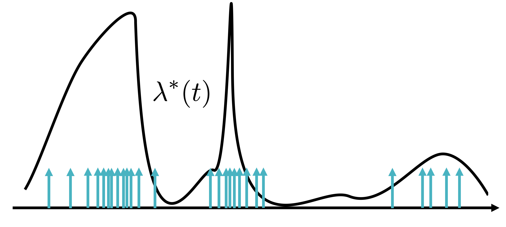

Social media is a broadcasting platform
Everybody is a broadcaster
Users have multiple followers
User attention is scarce
Other broadcasters appear in the same feed.
User attention is scarce
Not all posting times are the same.
When-to-post
Problem setup
We will help one broadcaster.
Problem setup
In this talk: we will consider only one follower.
Problem setup
\( {\color{other} M(t)} \): How many times others have posted till time \( t \). Not under our control.
Problem setup
\( {\color{us} N(t)} \): How many times our broadcaster has posted till time \( t \). Under our control.
Problem setup
\( r(t) \): position of the highest ranked post by our broadcaster on the follower's feed.
Problem setup
Minimizing \( r(t) \) is a lower bound on the problem of maximizing user attention.
Dynamics of the system
| \( r(t) \) | Rank of our broadcaster. | \( \leftarrow \) |
| \( {\color{us} N(t)}, {\color{other} M(t)} \) | Number of posts. |
Dynamics of inverse-chronological rank
Dynamics of inverse-chronological rank
Dynamics of the system
| \( r(t) \) | Rank of our broadcaster. | |
| \( {\color{us} N(t)}, {\color{other} M(t)} \) | Number of posts. | \( \leftarrow \) |
Temporal point processes
- Will model rate of posting.
- \( \mathbb{E} [ {\color{other} dM(t) } ] = \mathbb{P} [{\color{other} dM(t)} = 1] = \lambda^{*}(t)dt \)
- Can be cyclic, bursty, etc.
Posting dynamics using temporal point processes
Other broadcasters can be bursty with time varying rates, which we cannot control. \( d\lambda(t) = \left[\lambda_0'(t)+w \lambda_0(t) -w \lambda(t)\right]dt + \alpha \, \color{other} dM(t) \)
Posting dynamics using temporal point processes
Other broadcasters can be bursty with time varying rates, which we cannot control. \( \lambda^*(t) = \lambda_0(t) + \alpha \int_{0}^{t} e^{-w (t - s)} {\color{other} dM(s)} \)
Posting dynamics using temporal point processes
Other broadcasters can be bursty with time varying rates, which we cannot control. \( d\lambda(t) = \left[\lambda_0'(t)+w \lambda_0(t) -w \lambda(t)\right]dt + \alpha \, \color{other} dM(t) \)
Posting dynamics using temporal point processes
Other broadcasters can be bursty with time varying rates, which we cannot control.
Will not need parameter estimation at all!
Posting dynamics using temporal point processes
We would like to control our rate of posting \( u(t) \) to minimize \( r(t) \).
\( u(t) = ??? \)
Loss function
- Minimize \( r(t) \) over \( [0, T] \).
- Leads to a trivial solution!
- Minimize \( u(t) \) over \( [0, T] \) as well.
Loss function
- Penalizes both high rank and high posting rate.
- \( s \) and \( q \) are tunable parameters.
- Expectation over all possible future \( \{ {\color{us} N(\cdot)}, {\color{other} M(\cdot)} \} \).
- Leads to an analytical solution!
- Generalizes to
- multiple followers: \( r(t) \rightarrow \vec{r}(t) \), and,
- time varying weights: \( s \rightarrow \vec{s}(t) \).
Problem statement
Methodology
- Solve it as an optimal control problem:
- Compute cost-to-go.
- Use HJB equation to arrive at a PDE.
- Propose a solution to the PDE.
- Please see the paper for details.
Optimal rate of posting
For a very general class of behavior of other broadcasters, the optimal rate of posting is \( u^{*}(t) = c \times r(t) \).
\( u^{*}(t) \) to when-to-post
Since \( u(t) = 0 \), so we do not need to post at all.
\( u^{*}(t) \) to when-to-post

We take one sample from \( exp(c) \) to determine our next post's time.
\( u^{*}(t) \) to when-to-post

If other broadcasters post in the meanwhile, we may revise our planned posting time.
\( u^{*}(t) \) to when-to-post

However, we may not update our time if we planned to post was earlier than the new sampled time.
\( u^{*}(t) \) to when-to-post
After we post, we start this process all over again.
Demo
Synthetic experiment
Oracle, 1 follower
Synthetic experiments
Multiple followers
Data description
- All tweets collected between July 1 - Sept. 1, 2009
- Social network snapshot from Sept. 2009.
- Sample 2000 users from the dataset.
- Under truthful what-if conditions.
Truthful what-if experiments
Our broadcaster with his followers.
Truthful what-if experiments
Followers follow other broadcasters as well.
Truthful what-if experiments
Replay of the original tweets of our broadcaster.
Truthful what-if experiments
What if we were using RedQueen?
Truthful what-if experiments
What if we were using Karimi?
Results on Real Data
Under truthful what-if conditions
- \( 72\% \) average drop in rank, lowered for all users
- \( 3.5\times \) more time at top, increased for \( 99.1\% \) users
Time varying \( s(t) \)

Retweets per day.
Example user
Time varying \( s(t) \)

Conclusion
RedQueen:
- solves the when-to-post problem,
- is surprisingly simple, online, and,
- beats the current state of the art.
Future work
- Algorithmic feeds.
- Other cost functions.
- Multiple RedQueen users.
Questions?